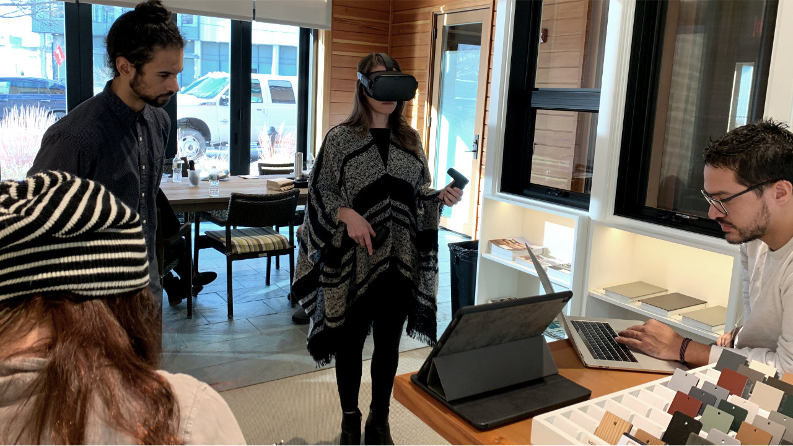
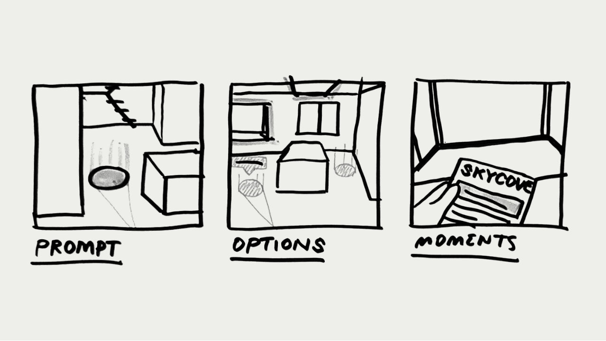
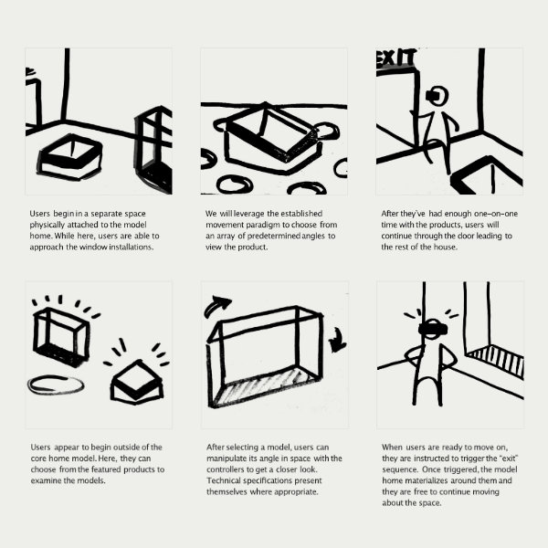
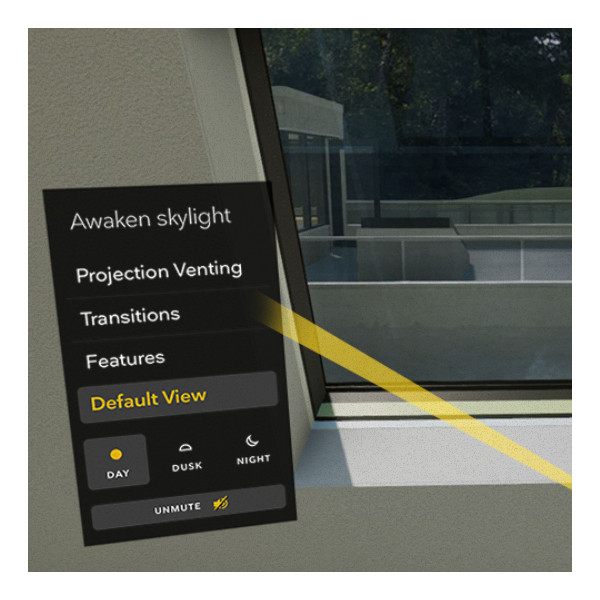
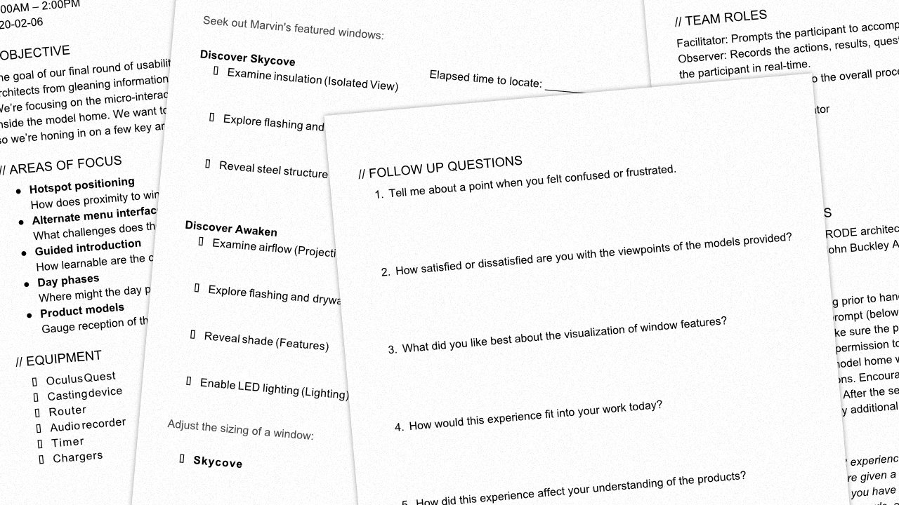
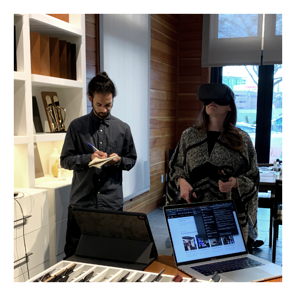
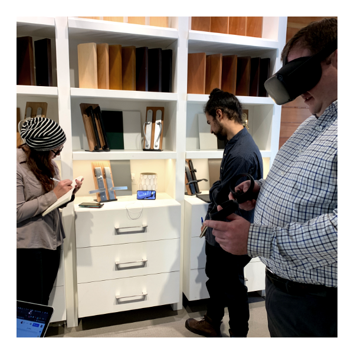
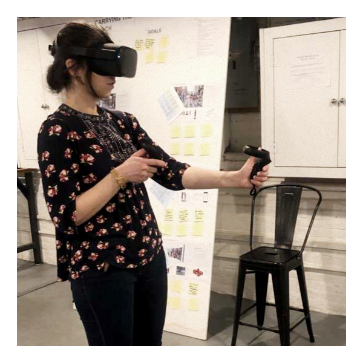
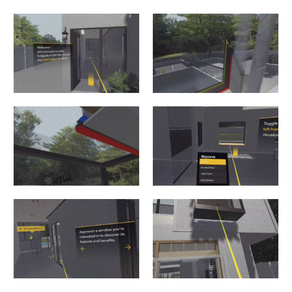

Marvin VR Experience
Bringing a virtual reality prototype to life with a guided introduction and easy to grasp controls.
The Marvin VR experience introduces architects to windows and demonstrates their features. Architectural project managers (APM) equip participants with a headset to guide them through a model home showcasing the brand’s new Aurora and Skycove windows. Harnessing the power of easily deployable VR kits, Marvin’s new product offerings reach architects without time consuming or costly trips to view physical samples.
The proposed schedule consisted of six weeks for production. During this period we were responsible for furnishing the digital space, implementing an onboarding flow, and extending the UI all while user testing new builds.
Production commenced with an information transfer between INPHANTRY and IDEO, whose initial research and development created the prototype. Through their hardware recommendation the Oculus Quest was chosen to carry the experience. This particular standalone headset allows for casting a live feed of visuals, untethered by the cables and sensors found in other models and competing hardware.
Rounds of usability testing and iterative design enhancements pushed the prototype into a fully realized model home boasting Marvin’s latest window products.
 As lead UX designer, I worked with INPHANTRY's tech lead to define the onboarding process. Beginning with storyboards for potential directions, we weighed the effectiveness of proposed methods with the time constraints we were up against.
I composed a script for weekly usability testing to be carried out at a local Marvin showroom. While on site, I facilitated the architect's experience and assigned supportive roles to teammates in order to capture data.
   Conducting weekly testing sessions proved instrumental in getting a feel for how practicing architects respond to the provided interactions. I was responsible for synthesizing insights, summarizing the latest changes to the prototype, and making presentations to the client throughout the week.
In the end, architects are presented with a tool that brings them face-to-face with product models in a realistic environment. These models tout high fidelity components to scale and animations that exemplify the features described. All of this, of course, is accessed from the comfort of one’s own office.
Team
PM: Abby Carlson
Development: Kilo Thomas
VO: Em Montoya
3D: Dan
Photography: Kevin Lee
UX/Design: Carson Halstead